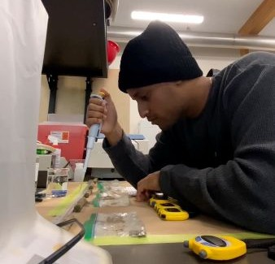

Background
A little more about me
Health
 My fitness journey started off as any other, with a decent amount of insecurity. As a kid, I was embarrassed by my chest, often teased for having "manboobs." In high school, I swung to the opposite extreme, becoming super skinny in an attempt to escape that identity, but I still felt weak and unhappy in my own skin.
When I entered university, I committed to building muscle and embraced the bulk—too much, in fact. My obsession with size led to being permanently bulked and overweight, leaving me with new challenges: poor health and a lack of confidence all over again.
Now, during my grad studies, I’ve embraced a healthier and more sustainable approach. I’m focused on cutting down, refining my physique, and prioritizing not just how I look but how I feel. It’s been a long road filled with trial and error, but I’ve learned that fitness is not just about the destination—it’s about the growth, both physical and mental, along the way.
My fitness journey started off as any other, with a decent amount of insecurity. As a kid, I was embarrassed by my chest, often teased for having "manboobs." In high school, I swung to the opposite extreme, becoming super skinny in an attempt to escape that identity, but I still felt weak and unhappy in my own skin.
When I entered university, I committed to building muscle and embraced the bulk—too much, in fact. My obsession with size led to being permanently bulked and overweight, leaving me with new challenges: poor health and a lack of confidence all over again.
Now, during my grad studies, I’ve embraced a healthier and more sustainable approach. I’m focused on cutting down, refining my physique, and prioritizing not just how I look but how I feel. It’s been a long road filled with trial and error, but I’ve learned that fitness is not just about the destination—it’s about the growth, both physical and mental, along the way.
Education
In high school, basketball was everything to me. I poured my heart into the game, but getting cut from the team was a crushing blow that forced me to reevaluate my priorities. With my dreams on the court dashed, I turned to academics—not because I had to, but because I wanted to prove to myself that I could excel elsewhere. This shift in focus opened doors I never imagined. I found a passion for science, particularly Genetics, which became the cornerstone of my undergraduate studies. Now, as a graduate student in Agriculture, I’m channeling that same resilience and drive to explore how we can innovate in food production and sustainability.
Wealth
 During my bachelor's degree, I juggled multiple part-time jobs and work-study positions to support myself. Early mornings and late nights were a constant as I balanced academics with the need to stay afloat financially.
But my mindset shifted when I discovered the world of stock options trading. What started as a side interest became a strategic pursuit. I dedicated my free time to learning the nuances of the market, refining my approach, and taking calculated risks.
It wasn’t always smooth—there were wins and losses—but the process taught me discipline, patience, and the value of thinking ahead.
During my bachelor's degree, I juggled multiple part-time jobs and work-study positions to support myself. Early mornings and late nights were a constant as I balanced academics with the need to stay afloat financially.
But my mindset shifted when I discovered the world of stock options trading. What started as a side interest became a strategic pursuit. I dedicated my free time to learning the nuances of the market, refining my approach, and taking calculated risks.
It wasn’t always smooth—there were wins and losses—but the process taught me discipline, patience, and the value of thinking ahead.